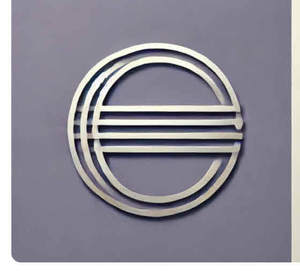

Trade Mark Journal No.2025/013 28 March 2025
UK00004173125 13 March 2025 (28)

- Class 28
- Toys; Toys, games, and playthings; Toys and playthings for pets; Ride-on toys; Cuddly toys; Puzzles [toys]; Toys for sandpits; Stuffed toys; Plush toys; Inflatable toys; Toys for babies; Noisemakers [toys]; Toys for pets; Fidget toys; Wind-up toys; Toys for use in perambulators; Radio-controlled toys; Plastic toys; Scooters [toys]; Crib toys; Toys for animals; Mobiles [toys]; Toys, games and playthings for pet animals; Pet toys; Windup toys; Rattles [toys]; Toys for cats; Toys for infants; Model cars [toys or playthings]; Wooden toys; Toys and playthings for pet animals; Toys for dogs; Toy dolls; Educational toys; Outdoor toys; Bendable toys; Toy playsets; Models being toys; Bath toys; Infant toys; Dog toys; Sandbox toys; Bathtub toys; Electronic toys; Action figures [toys or playthings]; Whistles [toys]; Inflatable ride-on toys; Sand toys; Controllers for toys; Soft toys; Miniature car models [toys or playthings]; Bouncing toys; Drones [toys]; Cloth toys; Tricycles for infants [toys]; Musical toys; Toy figurines; Toy furniture; Toys for birds; Play mats for use with toy vehicles [playthings]; Mechanical toys; Wheeled toys; Clockwork toys; Developmental toys; Fluffy toys; Plastic toys for use in the bath; Crib mobiles [toys]; Stuffed animals [toys]; Inflatable bath toys; Rocking toys; Stacking toys; Fabric toys; Plastic models being toys; Modular toys; Water toys; Model toys; Whack-a-mole toys for pets; Play mats incorporating infant toys [playthings]; Toy prams; Drawing toys; Action toys; Stuffed and plush toys; Stuffed plush toys; Plush stuffed toys; Battery-operated action toys; Sketching toys; Children's toys; Toy bicycles; Squeezable squeaking toys; Smart toys; Whistling toys; Construction toys; Toy tableware; Plastic character toys; Clockwork toys [of plastics]; Push toys; Articles of clothing for toys; Toy wheelbarrows; Squeeze toys; Talking toys; Toy bakeware and toy cookware; Toy mobiles; Toy xylophones; Bendy balls being toys; Stuffed bean-filled toys; Toy animals; Pull toys; Toy cars; Toy strollers; Assembly toys; Toys for pet animals; Water-squirting toys; Toy balloons; Toy scooters; Intelligent toys; Toy hats; Punching toys; Music box toys; Toy harmonicas; Toy cookware; Toy automobiles; Toy robots; Smart plush toys; Toy tools; Toy weapons; Toys in the form of puzzles; Xylophones being musical toys; Novelty toys for parties; Soft sculpture toys; Toy glockenspiels; Inflatable pool toys; Costumes being childrens playthings; Money guns being toys; Toy bakeware; Toy airplanes; Toy pushchairs; Puzzle mats [toys]; Toy vehicles; Toy balls; Playthings; Sports equipment; Sports equipment for pets; Football equipment; Apparatus for use in training for the game of rugby [sporting equipment]; Tennis uprights [sports equipment]; Badminton equipment; Volleyball equipment; Sporting articles and equipment; Vaulting poles (sports equipment); Fishing equipment; Sleds [recreational equipment]; Swimming equipment; Skateboards [recreational equipment]; Fencing equipment; Sports training apparatus; Sleighs [recreational equipment]; Hydrofoils for sports equipment boards; Billiard equipment; Bags specially adapted for sports equipment; Climbing units [playground equipment]; Racing lanes [swimming equipment]; Hunting and fishing equipment; Guns (Paintball -) [sports apparatus]; Paintball guns [sports apparatus]; Paintballs [sports apparatus]; Volleyball game playing equipment; Gloves for sports; Jungle gyms [play equipment]; Martial arts training equipment; Coin-operated gaming equipment; Sport balls; Sport hoops; Harnesses for use in sports; Ascenders [mountaineering equipment]; Juggling equipment.
DOSTUGIA LTD